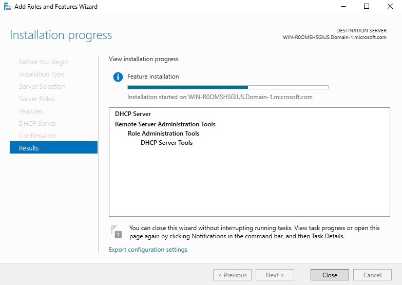
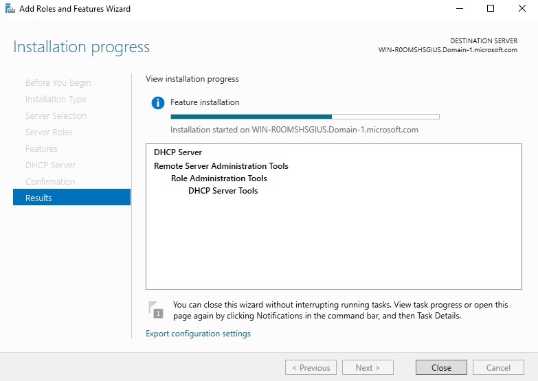

2. Confirm that a Forward Lookup Zone exists for your domain (e.g., Domain-1.local)

3. This zone contains A records used for domain authentication

Windows Server Roles are predefined sets of software features built into Windows Server that allow the server to perform specific network services and infrastructure functions. Each role defines what the server does — for example:
In a lab environment, assigning and configuring these roles lets you simulate real-world IT infrastructure, enabling hands-on learning in areas like domain management, policy enforcement, and network services deployment — all from your VirtualBox-based Windows Server instance.
Before setting up Active Directory, two critical services must be configured: DNS and DHCP.
This lab goes into configuring both on the same Windows Server that will later function as a domain controller.
Active Directory depends on DNS to locate domain controllers and services. DHCP simplifies network management by assigning the correct IP and DNS settings to domain-joined computers.
Typically the first step would be to install the DNS Server Role, however, in this example that is already installed. So we'll verify the installation in this step.
In this example, I'm going to select the following user's credentials, then click Commit. This demonstration included configuring internal DNS and DHCP on Windows Server 2016, the two critical services that must be configured prior to setting up Active Directory. The next lab will outline the steps on installing and setting up the AD DS server role.


Configuring DHCP
Install the DHCP Server Role
1. Click the Add roles and features in Server Manager.

2. The installation wizard will come up to follow the prompts.

3. For this example, I'm selecting Role-based or feature-based installation.

4. Server Selection:
5. Check the box next to DHCP Server under Server Role selection.

6. Follow the prompt to Add Features
7. Confirm installation selections, click Install.

8. Installation in progress
 


DHCP Authorization
1. After installing the DHCP server role, Server Manager will then have a notification for the Post-deployment configuration steps.

2. Upon clicking "Complete DHCP configuration", the DHCP Post-Install configuration wizard will come up to Authorize the DHCP server.

3. Specify the credentials to be used to authorize this DHCP server in AD DS.

Create a DHCP Scope
1. In Server Manager > Tools, select DHCP in the drop-down tools menu.

2. DHCP Manager:

3. Expand the server/domain hierarchy.

4. Right-click on IPv4, select New Scope.

5. The New Scope Wizard will prompt.

6. In this example, I'm going to name this Scope Name "Lab Scope".

7. Next, configure the IP Address range.

8. Specify the IP address range that you want to exclude, if any.
9. Set the Lease Duration:

10. Configure DHCP Options:
11. Enter the Default Gateway address of the network, for example - 192.168.1.1:

12. Set the Parent Domain name for Domain Name and DNS Servers.
13. Specify the WINS Server functionality if applicable.
14. Activate the new DHCP Scope:
15. Click Finish

16. The new scope under IPv4 of DHCP Manager.